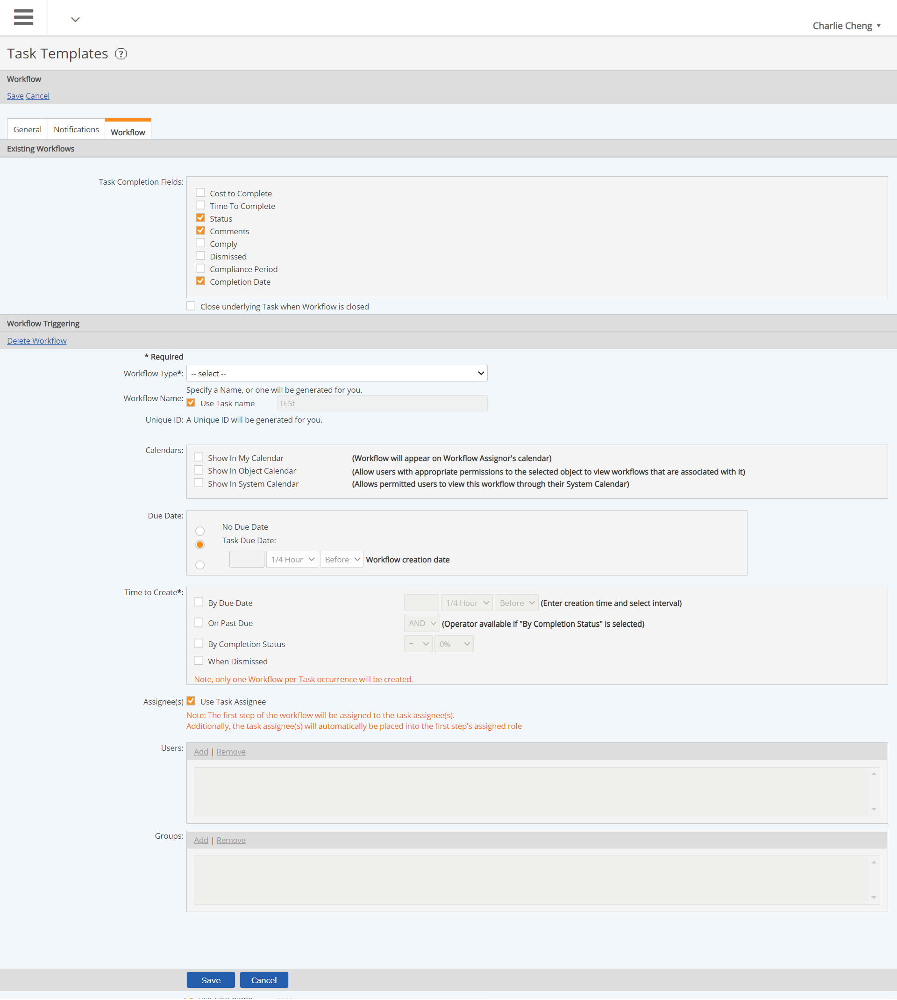

Workflows can be automatically triggered by a task, an event instance, or a limit exceedance.
A Task Template is used to specify the workflow type and to define the conditions for triggering the workflow. A workflow may also be associated directly to a task from the task properties.
To configure a workflow triggered by a task:
In the Workflows tab of the Task properties or on the Task Template, click Add Workflow in the Workflow Triggering section.
Check the Task Completion Fields to be displayed to users when they complete the related Workflow. The default selections are Status, Comments and Completion Date, but are not required.
If you want the Task to be closed automatically when the Workflow is closed, check "Close underlying Task when Workflow is closed".
In the Workflow Triggering section, select a Workflow Type from the dropdown list.

Workflow Name: Optional. If you enter a name here, all workflows triggered will have the same name. Leave blank to allow the workflow name to be generated as defined in the workflow name scheme. Default is the workflow ID, if no workflow name scheme was specified.
Check "Use Task name" to make the workflow name match the task name.
Choose a Due Date option: This can be an optional Due Date relative to the Workflow creation date, or same as the Task due date, or no due date.
Time to Create: When to create the workflow. Workflows are created relative to the due date of a one-time task, or relative to the due date of a recurrent task, in the same manner that notifications are triggered.
By Due Date: Time relative to the due date of an associated task. Optionally may include completion status of task (such as 1 day after task due date when completion status is <100%).
For recurring tasks/workflows, uset before task due date. Then set a sufficient time period to allow tasks and workflows to be created together in advance. For example, if you use "10 years before", task instances with associated workflows will be created for up to 10 years. See also Scheduling Workflows.
If the Time to Create field is modified, the associated workflow will be re-triggered.
Assignee(s): By default, the workflow assignee(s) will be the same as the task to which it relates. To choose a different assignee than the task, uncheck the Assignee(s) box that indicates "Use Task Assignee". Then add the desired Assignee(s) (user or group).
When editing tasks with associated workflows, the following rules apply.
Associated Objects: When associated objects for a task are modified, the workflow objects are also modified, for workflows that have not been edited by a user.
Recurrence Schedule: When the task schedule is modified, any workflows that have not been edited by a user will automatically be rescheduled to the changes to the task recurrence schedule.
Task Assignee: Changes to the task assignee will also be applied to the workflow assignee, in cases where they are set to match, for any workflows not yet edited by a user,
Task Name: If the workflow is set to have the same name as the task and the task name is modified, the workflow name will be modified accordingly. Task instances that do not currently have completion information will be modified. The new name will be applied to any workflows that already exist that have not been edited by a user.
Deleting Task-Workflow: When the triggering task is deleted, the associated workflow will be automatically deleted, too.